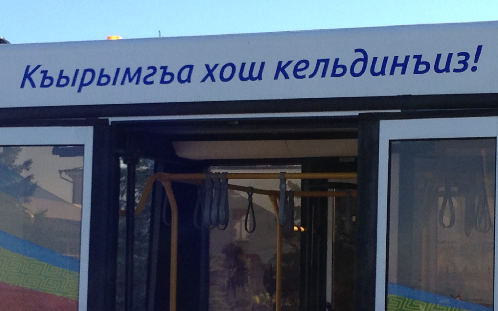

A biscriptual morphological transducer for Crimean Tatar
Francis M. Tyers; Jonathan North Washington; Darya Kavitskaya;
Memduh Gökırmak; Nick Howell; Remziye Berberova
Swarthmore College
Linguistics Department

Overview
- We present a biscriptual morphological transducer for Crimean Tatar
- A morphological transducer maps between form and analysis:
köyünde ↔ köyn px3sp loc - This transducer supports both orthographies, Cyrillic and Latin:
köyünde ↔ köyn px3sp loc
коюнде ↔ köyn px3sp loc - Free / Open Source, https://github.com/apertium/apertium-crh
- Roadmap:
- Context and Background
- Methodology and Issues
- Evaluation and Results
- Concluding remarks
Background: Crimean Tatar
- Understudied NW Turkic language
- Influence from Oghuz / SW Turkic
- Forcible resettlement by Soviet government in 1944
- To Central Asia, mostly Uzbekistan
- Hence some influence from SE Turkic (Uzbek)
- 288k speakers have returned to Crimea
- 313k still in diasapora
- Almost all speakers bi- or trilingual
(Russian & language of surrounding community) - Transmission to younger generations in flux
- Two normative orthographies:
- Latin: based on Turkish orthography
- Cyrillic: based on Russian orthography
- Kypchak / NW Turkic:
- crh - Crimean Tatar
- uum - Urum
- krc - Karachay/Balqar
- nog - Noghay
- kum - Kumyk
- kaz - Kazakh
- Oghuz / SW Turkic:
- gag - Gagauz
- tur - Turkish
- azj - Northern Azeri
- azb - Southern Azeri